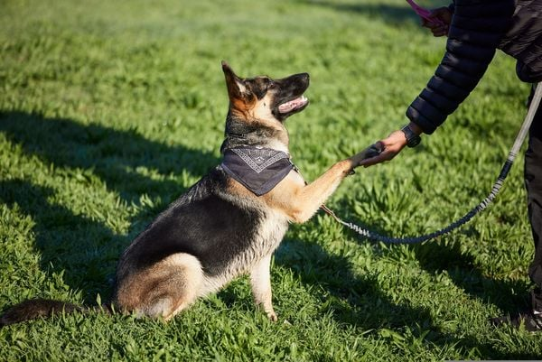

18 de julho de 2025

Bem-vindos ao nosso blog sobre cachorros de estimação! Neste espaço,
você encontrará informações e dicas úteis sobre como cuidar do seu
melhor amigo canino.
- Alimentação: uma alimentação adequada é essencial para a saúde do seu cão. Dê a ele ração de qualidade e evite dar comida humana, que pode causar problemas de saúde.
- Higiene: banhos regulares, escovação dos pelos e limpeza dos ouvidos são importantes para manter o seu cachorro limpo e saudável.
- Vacinas e vermifugação: mantenha a carteira de vacinação do seu cachorro atualizada e faça a vermifugação regularmente para prevenir doenças.
- Passeios e exercícios: os cachorros precisam de exercícios físicos diários para manter a saúde e a felicidade. Leve-o para passear e brincar regularmente.
- Consultas ao veterinário: consulte regularmente um veterinário para garantir que seu cachorro esteja saudável e receba os cuidados necessários.
Raças de cachorro
Existem muitas raças de cachorro, cada uma com suas características e
personalidades únicas. Algumas das raças mais populares incluem:
| Raças |
Características |
| Labrador Retriever |
Uma das raças mais populares do mundo, o labrador é conhecido por ser amigável, leal e inteligente. |
| Golden Retriever |
Outro favorito popular, o golden retriever é um cachorro amigável e afetuoso que adora brincar. |
| Poodle |
Uma raça inteligente e brincalhona, o poodle vem em três tamanhos diferentes e é uma ótima opção para pessoas com alergias. |
| Bulldog Inglês |
Um cachorro amigável e leal, o bulldog inglês é uma raça tranquila e de baixa energia. |
| Pastor Alemão |
Uma raça inteligente e corajosa, o pastor alemão é frequentemente usado como cão policial ou de guarda. |

Dicas para treinamento de cachorro
- Use reforço positivo: recompense seu cachorro quando ele fizer algo certo, em vez de puni-lo quando ele fizer algo errado.
- Seja consistente: use os mesmos comandos e treinamentos todos os dias para que o seu cachorro entenda o que é esperado dele.
- Não desista: treinar um cachorro pode ser difícil, mas é importante ser persistente e continuar tentando.
- Envolva toda a família: todos devem participar do treinamento do cachorro para que ele entenda o que é esperado dele.
- Considere a ajuda de um profissional: se você estiver tendo dificuldades com o treinamento do cachorro, pode ser útil procurar a ajuda de um treinador profissional.
Esperamos que estas informações e dicas tenham sido úteis para você e
seu cachorro. Lembre-se, cuidar de um cachorro é uma responsabilidade
importante, mas com amor e atenção, você pode desfrutar de uma vida
feliz e saudável com o seu melhor amigo peludo.
Sinais de que seu cachorro precisa de ajuda veterinária
15 de julho de 2025
Saber reconhecer quando seu cachorro não está bem é fundamental para
garantir sua saúde e bem-estar. Muitas vezes, os pets não conseguem
demonstrar claramente que estão sentindo dor ou desconforto, por isso
é importante estar atento aos sinais.
Sinais de emergência – procure ajuda imediatamente
- Dificuldade para respirar: respiração ofegante excessiva, língua azulada ou respiração muito rápida.
- Vômitos frequentes: especialmente se houver sangue ou se o animal não conseguir manter água no estômago.
- Diarreia com sangue: pode indicar problemas intestinais sérios.
- Convulsões: movimentos descontrolados, perda de consciência.
- Inchaço abdominal: barriga muito inchada e rígida, especialmente em cães grandes.
- Ferimentos graves: cortes profundos, fraturas óbvias ou sangramento intenso.
Como agir em uma emergência
- Mantenha a calma: animais sentem nosso nervosismo e podem ficar mais agitados.
- Ligue para o veterinário: explique a situação e siga as orientações.
- Transporte seguro: use uma manta ou toalha para carregar o animal com cuidado.
- Não dê medicamentos: nunca dê remédios humanos sem orientação veterinária.
- Observe e anote: registre os sintomas para relatar ao veterinário.
Lembre-se: é sempre melhor prevenir do que remediar. Consultas
regulares ao veterinário ajudam a identificar problemas antes que se
tornem graves. Quando em dúvida, sempre consulte um profissional — seu
cachorro agradecerá!